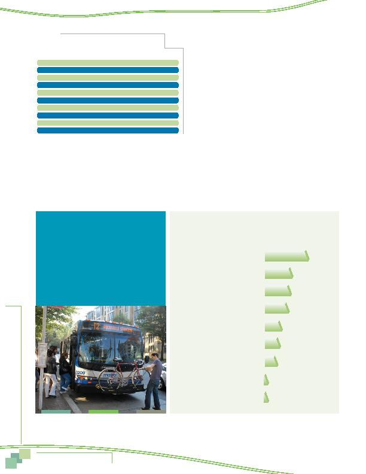

MWCOG-Comm
uter Conn
ecti
on
s-- 2010 State o
f th
e Comm
ute Report
4 0
With the exception of Arlington County Commuter Services,
use was generally higher for programs in outer jurisdictions
(Frederick, Loudoun, and Prince William). The relationship to
the location in the region is likely because outer jurisdiction
commuters encounter more congestion in their travel and have
longer commute times and distances, which would encourage
them to seek options for travel to work.
Use also was higher for programs associated with transit
agencies (Frederick, Loudoun, and Prince William). This con-
nection might be due to higher visibility of the services, but
65% of respondents who contacted a local program said they
were seeking transit information. In the inner jurisdictions,
transit assistance is provided by transit organizations that are
separate from the local commute assistance program.
Information and Services Sought from Local Organizations
Respondents who had contacted a local jurisdiction program
were asked what information or services they were seeking. The services desired are shown in Table 15. By far, the most prominent
service sought by respondents was transit information, sought by 65% of respondents who contacted a local program. Much smaller
percentages said they were looking for Metrochek/SmarTrip fare information (9%), help finding a carpool or vanpool partner (5%), or
general rideshare information (4%). The predominance of transit information is reasonable, given that several of the local programs are
administered by transit organizations.
Figure 35 - Used Local Jurisdiction Commute Assistance Program
Of Respondents who had Heard of Program
28%
Loudoun Co Office of Transportation
Arlington Co Commuter Servies
Prince William (PRTC/OmniMatch)
TransIT Services of Frederick Co
Montgomery Co Commuter Servies
Tri-County Council (Southern MD)
Alexandria Rideshare
RideSmart (Prince George's)
Fairfax RideSources
21%
20%
18%
13%
11%
9%
2%
2%
(Loudoun n = 259, Arlington n = 421, Prince William n = 314, Frederick n = 326, Montgomery n = 168,
Southern Maryland n = 435, Alexandria n = 127, Prince George's n = 177, Fairfax n = 121)
Table 15
Information and Services Sought from
Local Commute Assistance Programs (n = 364)
Commute Assistance Services
Percentage
Transit route/schedule information
65%
Travel directions, traffic, weather information
9%
Metrochek/SmarTrip
9%
Help finding carpool/vanpool partners
5%
Rideshare (carpool/vanpool) information
4%
Metro passes, transit tickets/fare media
4%
Park & Ride lot information, parking information
4%
Bicycle/walking information
4%
Road construction information
2%
Other *
9%
* Each response in the "Other" category mentioned by less than one percent of respondents.
By far, the most prominent service
sought by respondents was transit
information, sought by 65% of
respondents who contacted a local
program.
Awareness and Use of Commuter
Assistance Resources